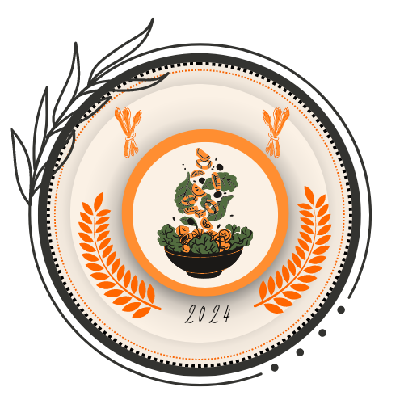

HealthyFood.VN
Bạn muốn trải nghiệm Fitfood nhưng không biết bắt đầu từ đâu ? Hãy tham khảo những câu hỏi thường gặp bên dưới.
Fitfood chuyên cung cấp các bữa ăn sạch hàng tuần được chuẩn bị sẵn theo phong cách Á Âu, giúp bạn theo đuổi một phong cách sống khỏe và cân bằng dinh dưỡng.
Tùy theo nhu cầu của bạn là giảm cân hay tăng cơ, bạn có thể chọn gói sản phẩm phù hợp tại trang Đặt Hàng. Fitfood sẽ đảm nhận việc nấu nướng và giao hàng mỗi ngày (thứ 2 đến thứ 6) cho bạn từ 2 đến 3 phần ăn. Các bữa ăn đều được tính toán calories cẩn thận và sử dụng các nguyên liệu tươi ngon tốt cho sức khỏe.
Với Menu hơn 100 món của mình, Fitfood luôn đảm bảo các phần ăn luôn giàu đạm, nhiều rau củ và ít tinh bột. Đồng thời Fitfood cam kết nói KHÔNG với việc sử dụng Bột Ngọt. Tất cả các bữa ăn đều được làm lạnh nhằm đảm bảo an toàn thực phẩm trong quá trình vận chuyển. Bạn vui lòng bảo quản trong tủ lạnh và hâm nóng bằng lò vi sóng trước khi ăn.
Bạn chọn gói ăn bạn mong muốn tại fitfood.vn/order, đừng quên thêm vào giỏ hàng các sản phẩm dùng kèm nha. Sau khi cho hết các sản phẩm vào giỏ hàng, bạn chỉ cần điền đầy đủ thông tin giao hàng trên website, chọn thời gian giao hàng và hình thức thanh toán COD hoặc chuyển khoản.
Sau khi hoàn tất, một email xác nhận sẽ được tự động gửi vào email bạn đăng ký. Bạn vui lòng kiểm tra thư mục SPAM nếu bạn không nhận được email, Bạn lưu ý là Fitfood không gọi điện xác nhận nha.
Đặc biệt từ nay bạn đã có thể tự chọn món yêu thích của mình trong gói ăn. Chỉ cần nhấn vào nút Chỉnh Sửa sau khi thêm gói ăn vào giỏ hàng và làm theo hướng dẫn để tự chọn món.
Nếu gặp bất cứ khó khăn nào trong quá trình đặt hàng, hãy gọi ngay số Hotline của
Các phần ăn (từ 2 - 3 bữa/ngày) sẽ được giao đến cho bạn vào buổi sáng các ngày trong tuần (từ 8h - 12h tùy khu vực) hoặc vào buổi tối hôm trước đối với các yêu cầu giao sớm (yêu cầu giao trước 8h sáng sẽ được giao từ 8pm - 10pm tối hôm trước)
Để đạt chuẩn VSATTP, các phần ăn của Fitfood đều được làm lạnh nhanh bằng công nghệ Blast Chiller và đóng gói ngay sau khi chế biến nhằm đảm bảo chất lượng và dinh dưỡng trong thực phẩm ở mức cao nhất, đồng thời tránh ôi thiu trong quá trình vận chuyển.
Ngay sau khi nhận phần ăn, bạn vui lòng để ngay vào ngăn mát tủ lạnh và hâm lại bằng lò vi sóng trong 02 phút trước khi dùng để đảm bảo chất lượng thức ăn tốt nhất.
Vui lòng liên hệ nhân viên Fitfood để được hỗ trợ hâm nóng, lưu ý các món có nước súp sẽ không hâm nóng được
Hộp nhựa đen của Fitfood là nhựa PP, hàng xuất khẩu Singapore nên an toàn sử dụng trong lò vi sóng ạ. Tuy nhiên, đối với hủ sốt màu trắng, bạn vui lòng bỏ nắp ra vì nắp nhựa trong không dùng được trong lò vi sóng.
Đối với các món Salad, bạn có thể lấy khay giấy chứa thịt vào lò vi sóng hâm riêng. Sau khi hâm có thể dùng chung với salad lạnh giòn sẽ giúp tăng thêm trải nghiệm của bạn.
Đối với các món nước, vui lòng xé túi canh súp cho vào hộp rồi hâm nóng hộp đồ ăn trong lò vi sóng để nhận được trải nghiệm món súp tươi nóng thơm ngon hơn.
Đối với các khách không có tủ lạnh hoặc không hâm nóng bằng Lò Vi Sóng / hấp cách thủy, Fitfood không đảm bảo được chất lượng thức ăn tốt nhất.
Tỷ lệ tinh bột phức (complex carb), chất béo (fat) và đạm (protein) trong các phần ăn của Fitfood được thiết kế để đảm bảo chế độ cân bằng dinh dưỡng tốt nhất. Hầu hết các phần ăn trưa của Fitfood được bổ sung tinh bột phức (complex carb) để đảm bảo hoạt động não bộ và duy trì năng suất công việc trong thời gian dài.
Các phần ăn được hạn chế để không có hoặc ít xương, hay phải sử dụng đến tay để ăn, tạo điều kiện thuận tiện và vệ sinh nhất cho khách hàng.
Thực đơn Fitfood không bao gồm các loại canh do việc nêm gia vị trong canh sẽ giảm hiệu quả trong quá trình giảm cân và theo đuổi 1 lối sống khỏe. Khách hàng nên bổ sung thật nhiều nước lọc (ít nhất 2 lít mỗi ngày) để thanh lọc cơ thể
Một số phần ăn sẽ đi kèm với hủ sốt, tùy theo nhu cầu của từng khách có thể tự nêm nếm cho hợp khẩu vị
Do Fitfood hạn chế sử dụng đường và các loại gia vị trong chế biến, nên khẩu vị có thể hơi nhạt đối với đa số khách hàng. Tuy nhiên, bạn có thể nêm nếm bằng cách tinh chỉnh định lượng của hủ sốt để phù hợp với khẩu vị của bạn
Chất ngọt của Fitfood đa phần đến từ rau củ hoặc đường nâu có trong các hủ sốt dùng kèm. Fitfood cũng luôn khuyến khích khách không nên ăn quá mặn hoặc ngọt ảnh hưởng đến khả năng tích nước hoặc viêm nhiễm của cơ thể.
Khi thay đổi gia vị một cách đột ngột thì bạn có thể cảm thấy thức ăn nhạt rất khó ăn. Rất nhiều khách hàng của Fitfood đều có trải nghiệm tương tự. Tuy nhiên, sau khi dùng khoảng 3 - 5 ngày, cơ thể bạn sẽ làm quen và có thể cảm thấy được sự thay đổi như cơ thể khỏe khoắn nhẹ nhàng hơn, da mặt ít nhờn và đỡ mụn hơn
Tùy theo thể trạng và cơ địa của từng người (nhiều hoặc ít mỡ thừa) mà bạn sẽ cảm nhận được hiệu quả giảm cân và giảm mỡ bụng.
Hiệu quả bước đầu sẽ nhận thấy rõ nhất ở vòng eo trong 1- 2 tuần đầu. Giảm từ 1-2cm vòng bụng. Bắt đầu từ tuần thứ 3, bạn sẽ cảm thấy ngán và ko muốn ăn, đây là thời điểm giảm cân phát huy hiệu quả nhất. Nếu bạn tuân thủ nghiêm ngặt và theo đuổi chế độ ăn của Fitfood trong những tuần kế tiếp, hiệu quả giảm cân có thể lên đến 3kg - 5kg trong 1 tháng. Việc giảm mỡ sẽ đạt hiệu quả tối đa khi kết hợp với việc tập luyện thể dục và gym.
Trong quá trình sử dụng các gói ăn của Fitfood, vì lượng calories nạp vào giảm so với chế độ ăn bình thường nên các khách nên uống nhiều nước lọc hoặc bổ sung các bữa xế bằng trái cây ít ngọt giàu vitamin (bưởi, chuối, táo, kiwi, dâu, bơ) hoặc khô gà, hạnh nhân (ăn tối đa 10 hạt/ngày). Fitfood có bán các sản phẩm dùng kèm ăn vặt lành mạnh. Bạn có thể liên hệ trực tiếp Fanpage hoặc website để tham khảo.
Quan trọng là bạn phải theo đuổi nghiêm túc để đạt được hiệu quả cao nhất, tránh trà sữa hoặc các thực phẩm quá nhiều tinh bột (cơm trắng, bún phở). Fitfood khuyến khích khách hàng khi đã đạt được cân nặng mong muốn có thể quay lại chế độ ăn bình thường. Chỉ cần hạn chế lượng đường và tinh bột trong các khẩu phần ăn.
Nhận biết được việc sử dụng nhựa trong các sản phẩm của mình gây tác động tiêu cực đến môi trường, Fitfood có một số chính sách nhằm giúp giảm bớt lượng rác thải của chính sản phẩm mình gây ra:
1/ Hộp nhựa đen được sử dụng trong tất cả các phần ăn của Fitfood. Vì vậy, Fitfood có chính sách Rửa Sạch Hộp và gửi lại cho Fitfood để nhận được Hoàn Tiền. Từ ngày 04/11/2023, chính sách thu hồi hộp đen nhựa PP và nắp nhựa sẽ áp dụng mức giá 500 vnđ/ bộ (gồm nắp và hộp). Bạn vui lòng rửa sạch và hoàn trả hộp theo bội số của 10 để nhân viên giao hàng tiện hoàn tiền lại cho bạn. Các hộp này sẽ được gửi lại cho nhà sản xuất để tái chế.
2/ Chính sách của Fitfood là chỉ cung cấp một bộ Muỗng Nĩa mỗi ngày, Fitfood thành thật xin lỗi vì sự bất tiện này, nhưng bạn vui lòng giúp Fitfood rửa sạch muỗng nĩa và sử dụng lại. Fitfood cám ơn bạn rất nhiều!
3/ Túi nylon đựng các phần ăn là Túi Tự Hủy thân thiện với môi trường. Túi sẽ tự hủy sau 3 tháng ngoài môi trường tự nhiên nên bên mình hy vọng sẽ có thể giảm thiểu được một phần nào tác hại tiêu cực đến môi trường xung quanh.
 Tiếng Việt
Tiếng Việt